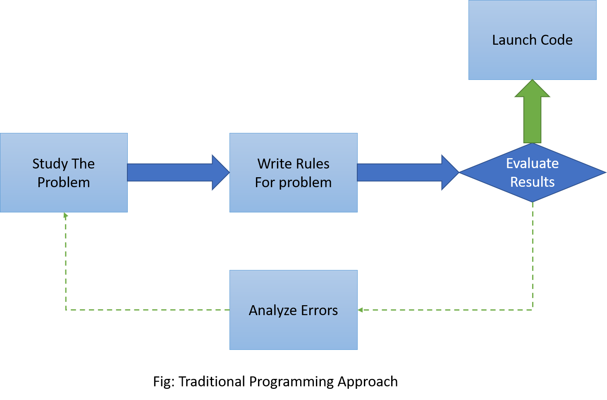

What is Machine Learning?
Definition
Machine Learning is science (and art) of programming computers so they can learn from data.
Here is slightly more general definition:
ML is the field of study that gives computers the ability to learn without being explicitly programmed.
And a more engineering-oriented one:
A computer program is said to learn from experience E with respect to some task T
and some performance measure P, if its performance on T , measured by P , improves
with experience E.
Examples:
- Spam Filter
- Youtube or Netflix video recommendation
- Voice Assistance like Alexa, Google Home, Cortana(Microsoft), etc
- Driverless car
Why Use ML?
Consider how would you write a program for spam filter or Youtube video recommendation
using traditional programming technique.
You might follow these steps:
- By seeing emails you will find some pattern in those spam mails like words Huge n times or Discount m times or some fancy words used frequently in spam mails.
- Then after finding pattern you will write logic if these patterns detected it will be a spam email.
- You will test your program and try to make it better until it gives good enough (or Satisfactory) result.
Here in above problem if companies those were sending spam emails if they change the pattern of sending spam mail then you will again have to write some more logics or do correction in previous logic to make result satisfactory. Hence it is very hard to manage these types of problems using traditional programming methodologies. Here Machine Learning comes as saviour to these types of problems.
 Next